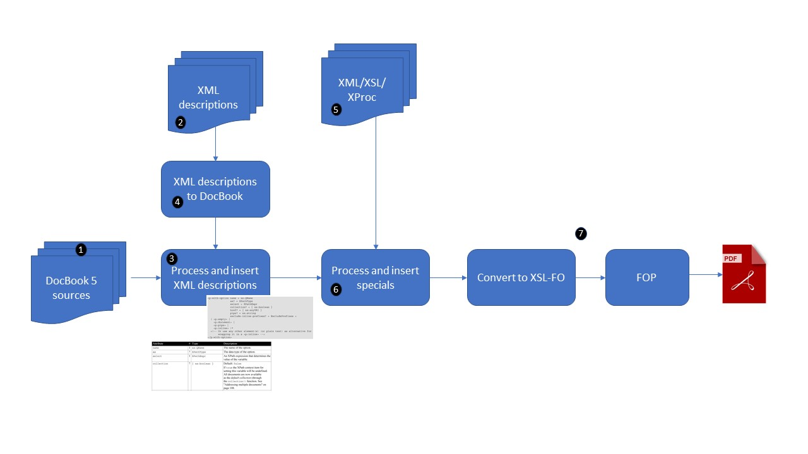

As an example a short overview of the tool-chain I'm using for creating the XProc book. And guess what: it's written in XProc, although of course still V1.0.
Figure 14. My tool-chain for the XProc book
|  |
The tool-chain starts off with DocBook 5 sources, split into files per chapter.
The descriptions of the various elements are in separate XML files, using a (self invented and, guilty as charged, badly documented) XML dialect.
Inside the source DocBook there are special instructions (XML elements in a different namespace) that trigger the processing of these XML descriptions
A special sub-pipeline converts the XML descriptions into DocBook and takes care of all the formatting, table building, etc.
I don't always want to create things like complex tables directly in DocBook. That's hard to write and maintain. Instead I write some XML that contains the data and a conversion (either XSLT or XProc) that turns it into DocBook.
Like the XML descriptions, this is triggered by special instructions in the DocBook sources.
Finally the tool-chain converts the DocBook into XSL-FO and, through FOP, into PDF.
All the components of this tool-chain are in an open-source library on GitHub (https://github.com/eriksiegel/xtpxlib,
in the xdocbook folder). There is a little documentation. If you're interested and need help, drop me a mail and I'll see what I
can do.